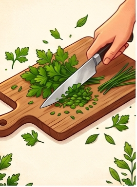

تعلم مصطلحات المطبخ باللغة الإنجليزية بطريقة سهلة وممتعة.

Chop يقطعTo cut food into small pieces.
To cut food into thin, flat pieces.
To cut food into small cubes.
To remove the skin from fruit or veggies.
To clean something with water.
To find the exact amount using a cup or spoon.
To rub food against a metal tool.
To separate into pieces.
To cook in hot oil or fat.
To cook in bubbling hot water.
To cook slowly just below boiling.
To cook using hot water vapor.
To cook meat or veggies in an oven.
To cook bread or cakes in an oven.
To cook over a fire or metal frame.
To make something hot.
To make bread crisp and brown.
To combine different ingredients together.
To mix together in a machine.
To move a spoon in circles.
To beat food very fast until fluffy.
To press and fold dough with hands.
To put more into a mixture.
To give food to people at a meal.
To make liquid flow out.
To remove liquid from food.
To press to get liquid out.
To crush food into a soft mass.
To break into bits by pressing hard.
To scatter small bits over food.
To put flour through a net for lightness.
To put a layer on bread or surface.
To test the flavor with your mouth.
To turn something over quickly.
Adam: Can I help you whip up a snack?
Mom: Yes! Please break two eggs into the bowl.
Adam: Should I add a sprinkle of salt?
Mom: Yes, then stir it well while I heat the pan.
Adam: I will toast the bread now.
Mom: Good! Then you can spread the jam on it.
Sara: Should I wash the carrots first?
Dad: Yes, then peel and chop them.
Sara: I will boil some water for the soup too.
Dad: Great. Don't forget to add the vegetables.
Sara: I will stir it so it does not burn.
Dad: Let it simmer, then we can serve it hot.
Nadia: Let's bake a cake for my brother.
Omar: I will measure the flour and sift it.
Nadia: I will mix the sugar and milk together.
Omar: Now we blend everything and pour it into the pan.
Nadia: Should we put it in the oven to bake?
Omar: Yes! Then we can taste it later.
Leo: I want to squeeze some oranges.
Mona: Okay! Wash them and slice them in half.
Leo: I will squeeze them into the jug now.
Mona: Please pour the juice into my glass.
Leo: Should I add some crushed ice?
Mona: Yes, it will taste very good!
Use "fry" for oil in a pan. Use "bake" for the oven.
"Peel" is for fruit skin. Use "pour" for liquids like milk or water.
"Sprinkle" is for dry things like salt or sugar. Use "pour" for liquids.
"Mash" means to crush into a soft paste (like potatoes). "Slice" means to cut into flat pieces.
We "boil" things in hot water. We use dry heat to "toast" bread.